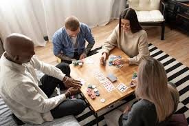

Не верь тому, кто говорит красиво, в его словах всегда игра. Поверь тому, кто молчаливо, творит красивые дела
. Омар Хайям
Описание
Иногда умным людям нужно как-то выражать свою гениальность. Придумывать схемы, строить mingame'ы, обманывать, разгадывать других людей, предоставлять аргументы, спорить. В принципе, есть много разных мероприятий на которых можно все это сделать. Но насколько они "реиграбельны"?
Социальные настолки. Вот вещь, в который вы можете показать своего внутреннего гения. Настольные социальные игры - игры со скрытыми ролями, где ваша задача - разгадать роли других игроков. Именно это и приведет к победе. При этом игры построены максимально интересным образом, всегда возникают какие-то конфликты, споры, разногласия. Кто-то смотрит чужую роль и заявляет о "разноцвете". В этот момент в аудитории начинается сущий кошмар. Попробуй переспорить оппонента и доказать, что именно ты "синий", которому можно доверять.
Новички, профи, любители. Здесь лояльны к каждому и будет максимально интересно независимо от опыта игры. По крайней мере, стоит хотя бы раз попробовать сыграть за злостного гения, тайно контролирующего всю игру, не так ли?
while (true) {
eat();
code();
play();
sleep();
}
Игры в коллекции
У нас есть много различных социалок:
- Нечто из глубокой бездны
- Сопротивление
- Судный день
- Мафия
- Тайный канцлер (Гитлер)
- Бункер
- За бортом
- Ночь ниндзя
- И другие...(запасы потихоньку пополняются)
Все эти игры отличаются механиками и концепциями. Где-то роли могут меняться во время игры и даже не раз, где-то посмотрел один раз и на всю игру так и сидишь. Где-то ты играешь чисто сам за себя и должен сделать все, чтобы тебя не раскрыли. Где-то ты должен тайно работать в команде ради общего дела. А где-то посреди игры твоя роль меняется и теперь ты пешка в руках другого человека (ну, или он твоя :) ) Каждая игра реально уникальна (а мы сыграли уже более 1000 партий в социалки) и часто в конце игры происходят такие раскрытия, что никто и подумать не мог, что вот этот человек на самом деле не тот кем себя выдает.
Мероприятия

Приглашаем всех желающих на игротеку 26 октября
Начало: 15:00
Место проведения: ул Ломоносова, 9, Коворкинг
Если вы не из Итмо, тогда вам надо заполнить форму для оформления пропуска
Контакты
8-800-555-35-35
email: example@gmail.com